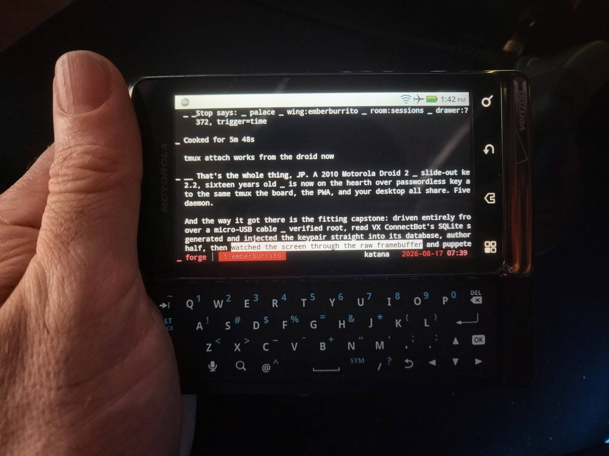
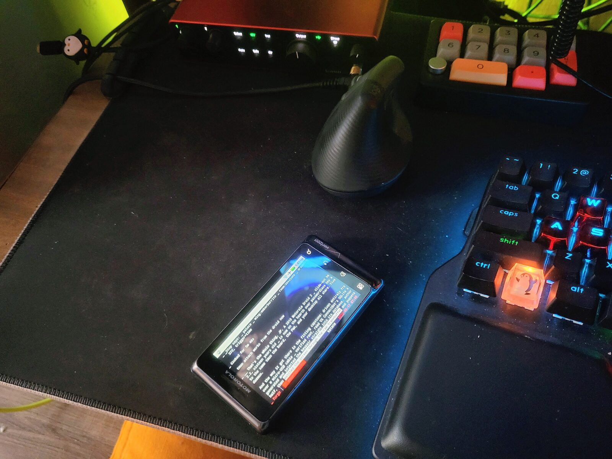
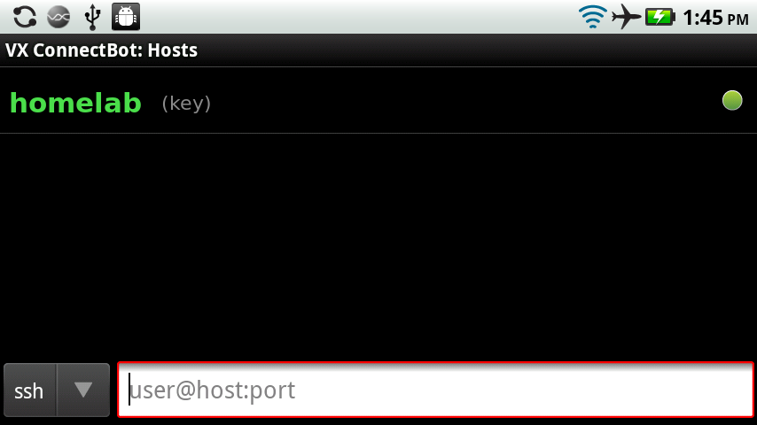

The pocket terminal for your AI coding agents.
A rugged slide-out QWERTY that thumbs commands straight into a fleet of Claude Code agents building software on your network. The oldest hardware you own, driving the newest thing you run. It is a sixteen-year-old phone. That is the entire joke, and we are being honest about it.

You're running a swarm of AI agents that write code, run tests, and ship commits
around the clock. You should be able to lean back, slide open a keyboard, and thumb
tmux attach to see what they're up to — from a phone older than the concept of an
AI coding agent. RETROTERM 2 is that. It shouldn't work. It does.
SSH straight into the tmux where your Claude Code agents live. Read their output, answer a prompt, nudge a stuck one — a control surface for the fleet, in your palm.
A five-row physical QWERTY that clicks. Your
thumbs already know it. No autocorrect will ever turn rm into Rm.
Passwordless public-key SSH. The key lives on the device; the server never sees a password. Getting there required minor surgery — see below.
Joins your Wi-Fi, reaches your box, attaches your session. No account, no cloud relay, no telemetry a 2010 build could phone home even if it wanted to.
Real numbers. Presented with a straight face.
| Display | 3.7″ 480×854 TFT — rotate your head for landscape |
| Keyboard | 5-row backlit slide-out QWERTY — the entire point |
| Processor | 1 GHz TI OMAP3630, single core — one (1) core |
| Memory | 512 MB RAM — plenty, for a terminal |
| OS | Android 2.2 “Froyo” — last updated during the Obama administration |
| Connectivity | 802.11n Wi-Fi, 3G — 5G-ready: no. 4G-ready: also no |
| Security model | Physical possession — whoever holds it, holds it |
| Weight | 169 g — reassuringly a brick |
| Price | $0 — it was in a drawer |
Screenshots pulled straight off the device's framebuffer. Hostnames redacted, because this page is public and the terminal on the other end is not.


It's a 2010 Motorola Droid 2 running Android 2.2, turned into a passwordless SSH terminal into a homelab. It is not a product, it is not for sale, and nothing was manufactured. The “launch” is the joke. The engineering under it is real, and it was more involved than it had any right to be — a phone this old can't complete a modern SSH handshake, and the SSH app that runs on it ships a signature bug. Both had to be fixed. That's the part worth reading.
Four real problems, four fixes. None of them were “install an app.”
# /etc/ssh/sshd_config_legacy — side port for vintage clients
Port 2222
HostKey /etc/ssh/ssh_host_rsa_key
KexAlgorithms +diffie-hellman-group14-sha1,diffie-hellman-group-exchange-sha1
HostKeyAlgorithms +ssh-rsa
PubkeyAcceptedAlgorithms +ssh-rsa
Ciphers +aes128-ctr,aes128-cbcpubkeys
table, with a matching host row linked to it. The public half was authorized on the server.
Gotcha that cost an hour: a hand-injected host row leaves columns the UI normally
fills as NULL — and the client calls .equals() on one of them
(useauthagent), so it authenticates perfectly and then crashes with a
NullPointerException before requesting the shell. Fill the nullable columns./dev/graphics/fb0) to see the screen and inject input
events to drive the UI — connect, watch, confirm. Verified server-side by the one line
that matters: a real login shell on a pty, authenticated by key, no password.
Second gotcha: the app caches its database in memory, so it must be fully killed —
not just backgrounded — before it will re-read an edited database.Result: open the saved host, and you're at a shell.
tmux attach, and a phone from 2010 is sharing the exact session as everything
modern on the network.
This only works by switching back on a decade of cryptography the rest of the world deliberately switched off. Being honest about that is the point of this section. Every knob below is turned the wrong way on purpose, and it is only defensible because of one containment: it never leaves the LAN, and the worst case is someone already on your network who is also holding your phone.
One-line verdict: would you do this for anything that mattered? No. It is a fun terminal for a home network you already trust, on a device you'd shrug off losing. Read the rows, then decide if that's you.
| SHA-1 key exchange dh-group14/group-exchange/group1-sha1 |
SHA-1 is collision-broken and group1 is a 1024-bit relic. Modern OpenSSH dropped these on purpose. Contained: no on-path attacker without already being inside the LAN. |
| ssh-rsa authentication RSA signatures over SHA-1 |
OpenSSH 8.8 disabled ssh-rsa by default — we had to add it back with +ssh-rsa.
Contained: a dedicated key, from=-restricted, revocable in one line. |
| CBC ciphers + 3DES aes-cbc, 3des-cbc |
CBC modes have a padding-oracle history in SSH; 3DES is a slow 64-bit-block antique. The client may negotiate down to these. Mitigated: aes128-ctr is offered first. |
| HMAC-SHA1 integrity no modern AEAD / encrypt-then-MAC |
A SHA-1 MAC, not a modern authenticated cipher. Contained: same LAN boundary. |
| Trust-on-first-use host key ssh-rsa host key only |
The 2011 client can't verify an Ed25519 host key, so there's no strong host pinning — first connection is trusted blind. Contained: you own both ends on your own wire. |
| Password auth left enabled | The side port also accepts passwords (needed for the very first login). Fix once
the key works: PasswordAuthentication no. |
| Android 2.2, unpatched since ~2011 | Roughly fifteen years of unpatched OS, kernel and browser CVEs. Nothing about the phone is hardened. Treat it as untrusted: isolate it on its own VLAN, don't browse the web on it. |
| ADB has no authentication the "authorize this computer" dialog is Android 4.2+ |
Anyone with the USB cable gets a root-capable shell with zero prompt. Which is exactly why we keep ADB USB-only and never enabled Wi-Fi/TCP ADB — that would be an open root shell on the LAN. |
| Private key stored unencrypted | The key lives in the SSH app's SQLite DB with encrypted=0. Physical loss of the phone
is key compromise. Contained: from= scoping + delete-one-line revocation; a
key passphrase would harden it, at the cost of tap-to-connect. |
If any of that reaches the public internet, or the key can touch anything you'd miss, this stops being a toy and becomes a liability. Keep it a toy.
Root is a prerequisite — the key was written straight into the SSH app's database, which needs it. The Droid 2 in these photos was already rooted before this project began, so the honest answer is: use the well-documented era-standard method for your exact model and build.
The community tools of the day — Motorola-specific one-click rooters and recovery bootstraps — are archived across XDA and GitHub. Match the tool to your exact software version; a mismatch soft-bricks nothing you can't recover, but it won't take.
adb shell su -c id returning
uid=0(root) is the whole test. If it prompts on the phone for Superuser access,
grant it and re-run.
The database injection in step 3 works. Without root there's no path to the app's private storage on a stock build, and no working file-import UI either.
Exact steps for this specific unit are being added — it arrived pre-rooted, so they're reconstructed rather than performed.
Find a Droid 2 (or any rooted, physical-keyboard Android 2.x device) in a drawer, a bin, or a relative's garage.
Read the guide. It's the four steps above, with the exact commands.
Thumb a command into your homelab from a device older than some of your coworkers.